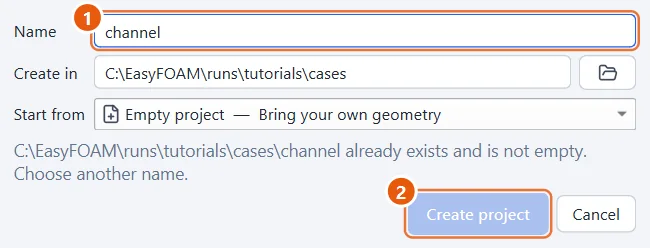
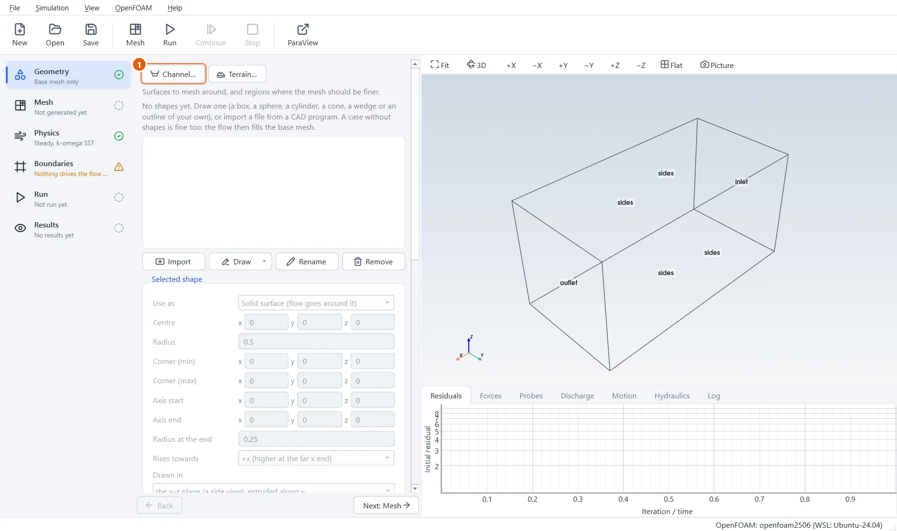
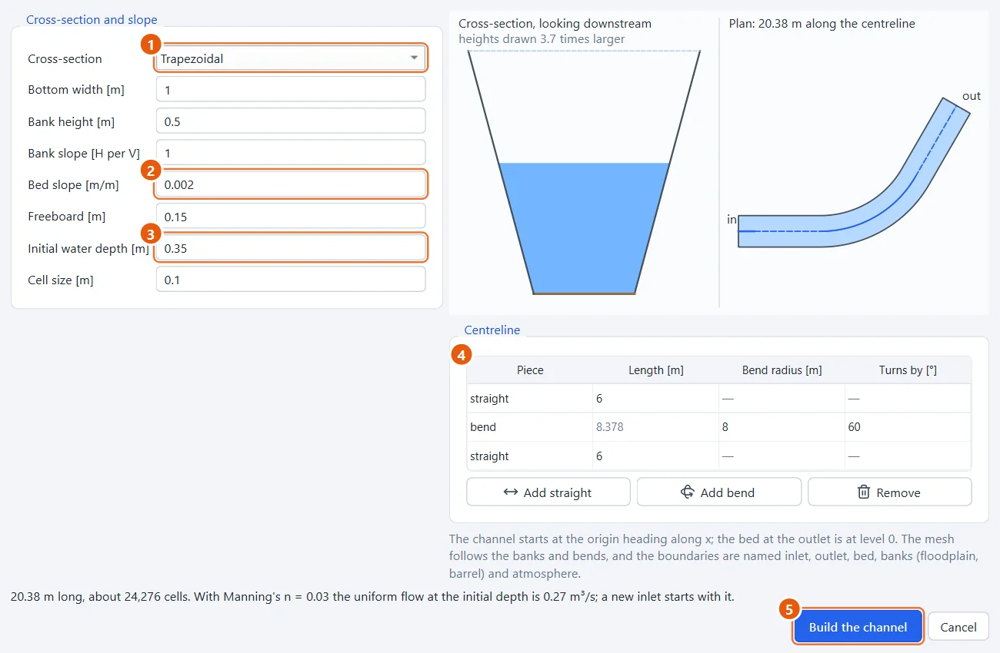
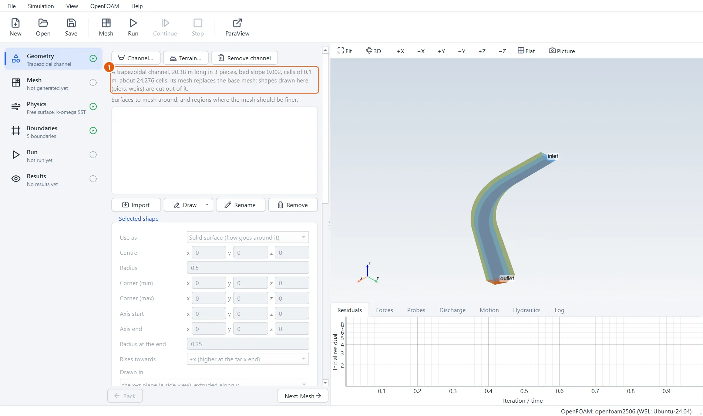
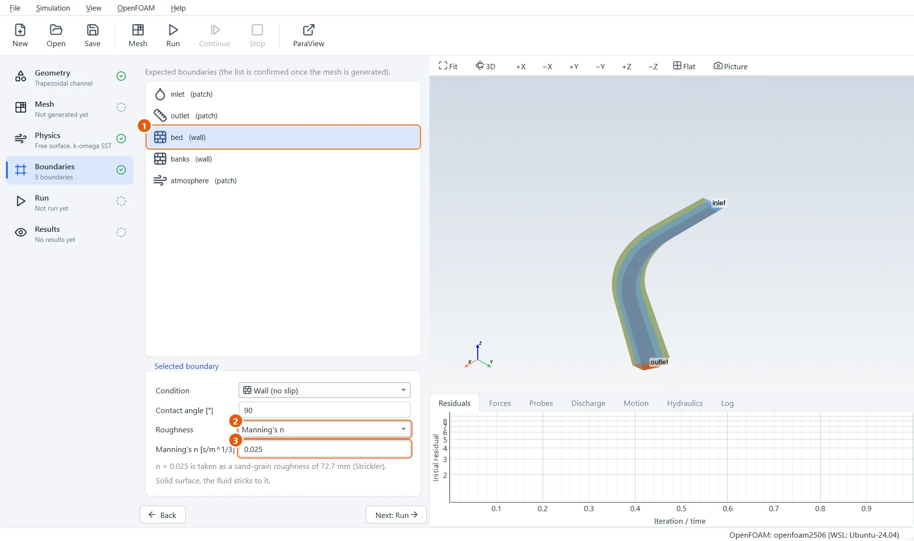
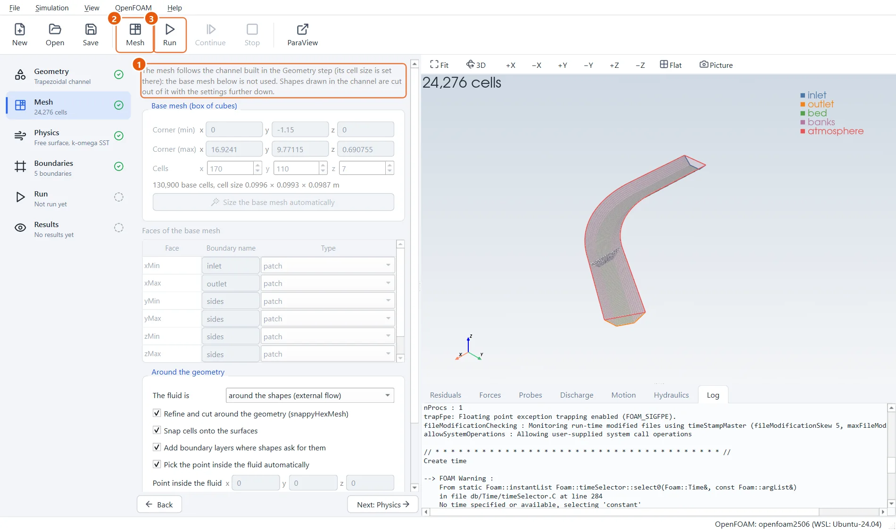
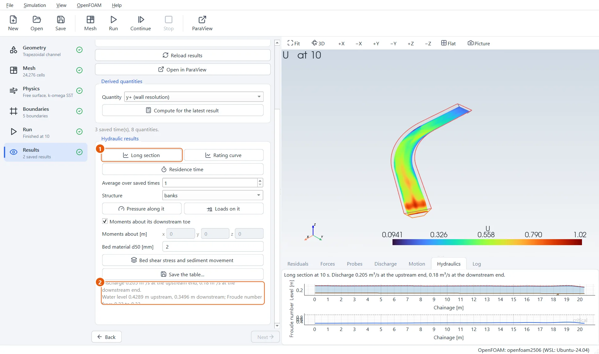

Tutorial 15 of 17
Build a channel with a bend
Draw a trapezoidal channel with a bed slope and a 60° bend, let EasyFOAM mesh it to fit, and follow the water round the bend in a long section.
Many questions in open-channel hydraulics start with a channel of a known shape: a trapezoid cut into the ground, falling gently, with a bend in it. Instead of drawing it in a CAD program, you can give EasyFOAM the cross-section, the slope and the centreline, and it builds the channel and a mesh that follows its banks and bends.
What you will learn
- build a channel from its cross-section, bed slope and centreline
- see the starting water and the boundaries the builder sets up
- give the bed a Manning roughness
- draw a long section along a curved centreline
Computer time: a few seconds for the mesh and about a minute for the run, on four cores.
1An empty project
Start a new, empty project and call it channel.
- Type
channel. - Click Create project.


2Open the channel builder
In the Geometry step, press Channel….
- Press Channel….


3Cross-section and centreline
A trapezoid with a 1 m bed, 0.5 m banks leaning out at 1 to 1, and a bed slope of 0.002. The centreline runs 6 m straight, turns 60° to the left round a bend of 8 m radius, and runs another 6 m. The water starts 0.35 m deep. The preview draws the section (heights exaggerated) and the plan.
- Cross-section: Trapezoidal.
- Bed slope:
0.002. - Initial water depth:
0.35m. - The centreline: straight
6, a bend of radius8turning60°, straight6. - Press Build the channel.


4The channel
EasyFOAM builds the channel and sets up the case: free-surface flow, an inlet that lets in the uniform-flow discharge for the starting depth, an outlet that holds that depth, and walls named bed and banks. The 3D view shows the starting water in the channel.
- What was built: length, slope and the number of cells.


5Inflow and roughness
In Boundaries, pick inlet and set its flow rate to 0.2 m³/s. Then pick bed and give it a Manning's n of 0.025, a clean earth channel.
- The boundary bed.
- Roughness: Manning's n.
- Manning's n:
0.025.


6Mesh and run
The mesh is made by blockMesh alone, fitted to the channel: no cells are wasted outside it. Then run for 10 s on four cores.
- The base mesh is not used: the mesh follows the channel.
- Click Mesh in the toolbar (or press F5).
- Click Run in the toolbar (or press F6).


7Round the bend
After the run, press Long section in Results. The stations follow the curved centreline, so the long section runs round the bend. The bed falls about 4 cm over the 20.4 m from inlet to outlet.
- Press Long section.
- Discharge, depth and Froude number along the channel.

